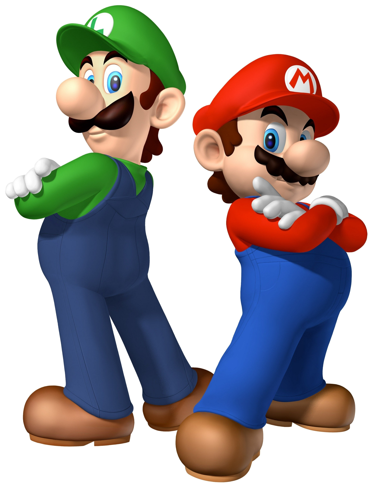
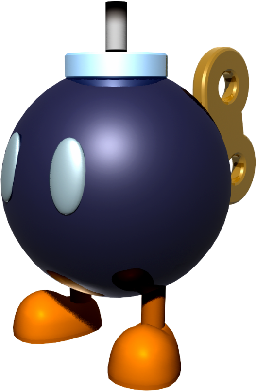

Pest Control
Pest Control

Bob-omb
Bob-ombs (originally formatted as Bob-Ombs[1]) are living, moving mechanical bombs with eyes, feet, and a wind-up key on the back.
Deep Cheep
These creatures are green and will swim in the direction of Mario or Luigi in underwater levels depending on the direction they swim in. Deep Cheeps will only give up pursuing Mario or Luigi provided the latter ones swim behind and past the fish foes.
Eep Cheep
Eep Cheeps are a sub-species of Cheep Cheeps first found in New Super Mario Bros. Wii. They are similar in appearance to Cheep Cheeps, although they are golden in color and will swim away from Mario when he gets close.